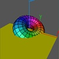

In this movie, after loading and positioning a torus, a square is loaded, colored, and positioned off screen. Next, actions are specified for both the torus and the square using the

Transforming Several Objects at Once:Scriptcommand. The finalScript actioncommand causes both scripts to be rung concurrently.The
Torus.ooglfile was created using the fileTorus.csin CenterStage. Thexyz.vectsquare.quadfiles are standard ones that come with Geomview.
Torus-4.smLoad Torus.oogl Load xyz.vect Transform {Scale .25} Torus.oogl Transform {YZ -$pi/3} Transform {XY -$pi/6} Transform {YZ $pi/2} Torus.oogl Load square.quad Color square.quad {1 1 0} Transform {Translate {0 -2.5 0}} square.quad Script for Torus { Sequence {Product {XZ $pi} {YZ $pi/2}} 16 } Script for square.quad { Sequence {Translate {0 2.5 0}} 16 } Script action Pasue 5 Delete World Pause 5
|
|